| Previous | Table of Contents | Next |
The F-test can be used to check if the SSR is significantly higher than the SSE by computing the ratio (SSR/vR)/(SSE/ve), where vR and ve are degrees of freedom for the SSR and SSE, respectively. The quantity SSR/vR is called the mean square of the regression (MSR). In general, any sum of squares divided by its degrees of freedom gives the corresponding mean square. Thus
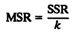
and
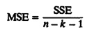
The ratio MSR/MSE has an F[k, n – k – 1] distribution, that is, an F distribution with k numerator degrees of freedom and n – k – 1 denominator degrees of freedom (see Section 29.7 for F distribution). If the computed ratio is greater than the value read from the F-table, the predictor variables are assumed to explain a significant fraction of the response variation. A convenient tabular arrangement to conduct the F-test is shown in Table 15.3. The table is arranged so that the computation can be done column by column from the left. As shown under the table, the standard deviation of errors can be estimated by taking a square root of MSE, which is an estimate of the error variance.
It must be pointed out that the F-test is also equivalent to testing the null hypothesis that y does not depend upon any xj, that is against an alternate hypothesis that y depends upon at least one xj, and therefore, at least one bj ≠ 0. If the computed ratio is less than the value read from the table, the null hypothesis cannot be rejected at the stated significance level.
b1 = b2 = ... = bk = 0
| TABLE 15.3 ANOVA Table for Multiple Linear Regression | ||||||
|---|---|---|---|---|---|---|
| Com- ponent | Sum of Squares | Percentage of Variation | Degrees of Freedom | Mean Square | F- Computed | F- Table |
| y | 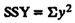 | n | ||||
| 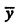 | SS0 = 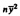 | 1 | ||||
| y – 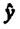 | SST = SSY – SS0 | 100 | n – 1 | |||
| Regression | SSR = SST – SSE | 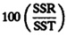 | k | 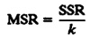 | F[1–α;k,n,–k–1] | |
| Errors | SSE = yTy – bTXTy | 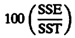 | n – k – 1 | 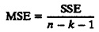 | ||
| 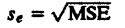 | ||||||
In simple regression models, there is only one predictor variable, and hence the F-test reduces to that of testing b1 = 0. Thus, if the confidence interval of b1 does not include zero, the parameter is nonzero, the regression explains a significant part of the response variation, and the F-test is not required.
| TABLE 15.4 ANOVA Table for the I/O’s, Memory, and CPU Time Example | ||||||
|---|---|---|---|---|---|---|
| Component | Sum of Squares | Percentage of Variation | Degrees of Freedom | Mean Square | F- Computed | F- Table |
| Y | 828 | |||||
| 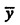 | 622 | |||||
| y – | 206 | 100.0 | 6 | |||
| Regression | 200 | 97.4 | 2 | 100.20 | 75.40 | 4.32 |
| Errors | 5.32 | 2.6 | 4 | 1.33 | ||
| 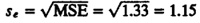 | ||||||
Notice that in example 15.2, the regression passed the F-test, indicating that the hypothesis of all parameters being zero cannot be accepted. However, none of the regression parameters are significantly different from zero. This apparent contradiction is due to the problem of multicollinearity, which is discussed next.
Two lines are said to be collinear if they have the same slope and same intercept. These two lines can be represented in just one dimension instead of the two dimensions required for lines that are not collinear. Two collinear lines are not independent. Similarly, when two predictor variables are linearly dependent, they are called collinear. The linear dependence between variables is measured by their correlation. Thus, if the correlation between two predictor variables is nonzero, they are collinear and the problem of linear dependence among many predictor variables is called the problem of multicollinearity. In particular, this problem may result in contradictory results from various significance tests.
To see if the problem of multicollinearity exists, we need to find the correlation between various xi pairs. In cases where the correlation is relatively high, we might eliminate one of the xi’s from the regression and redo the computations with the remaining x-variables. If the significance of the regression as a whole improves, we can conclude that the correlation between the x’s is causing the problem.
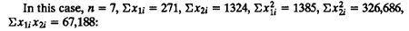
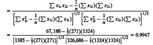
| Previous | Table of Contents | Next |